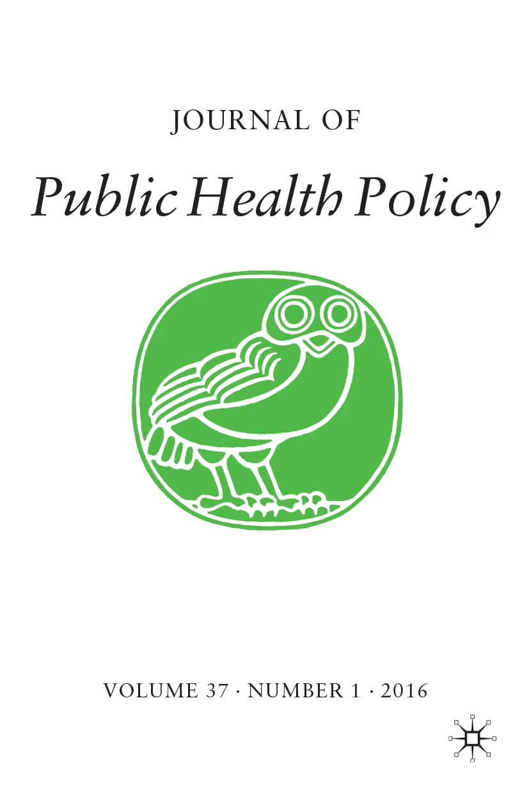
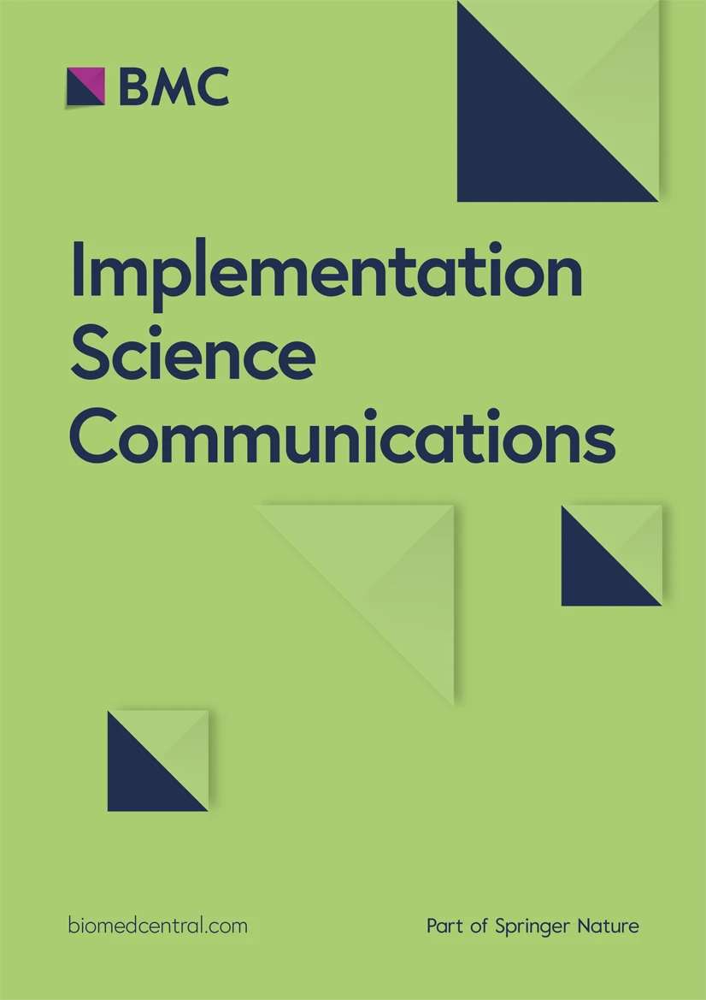

Causal Data Analysis
Coincidence Analysis
A configurational comparative method for causal learning
Coincidence Analysis (CNA) is a configurational comparative method of causal inference and data analysis grouping causes into bundles that are jointly effective and placing them on alternative causal routes to their effects. The method is custom-built for uncovering multi-outcome structures, even when they produce no or only weak pairwise dependencies between endogenous and exogenous factors.
This page collects relevant information on CNA.
Psychology · Journal of Environmental Psychology
Henrik Johansson Rehn, Alexandre Sukhov, Lars E. Olsson, and Margareta Friman use CNA to explore the "window of opportunity" for car use reduction and to identify the causal pathways that lead people to reduce their car use.

Firearm policy · Journal of Public Health Policy
Daniel C. Semenza, Edward J. Miech, Brielle Savage, and Devon Ziminski use CNA to link combinations of city-level prevention efforts and state firearm policies to fatal shooting rates across 100 US cities.

Method · Implementation Science Communications
Laura Caci, Kathrin Blum, Lauren Clack, and Bianca Albers offer a four-stage approach to factor selection for Coincidence Analysis and other configurational comparative methods.
Public health · Health Affairs Scholar
John Rich, Edward Miech, and colleagues apply CNA to identify the social factors that link to low life expectancy across Chicago's 77 community areas.
Democracy · PSRM cover
Jesse Rhodes delivers an exemplary study applying CNA to discover causal paths leading to substantial improvement in subnational democracy in the U.S. states.
MethodMore information about the basics of the method and its theoretical foundations is provided here.
ReadingsAn overview over the literature on CNA, both methodological and applied, is provided here.
BaseCore analysis; the vignette introduces theory.
frscoreFit-robustness for configurational methods.
cnaOptOptimize consistency and coverage.
GraphicsDraw causal hypergraph plots.